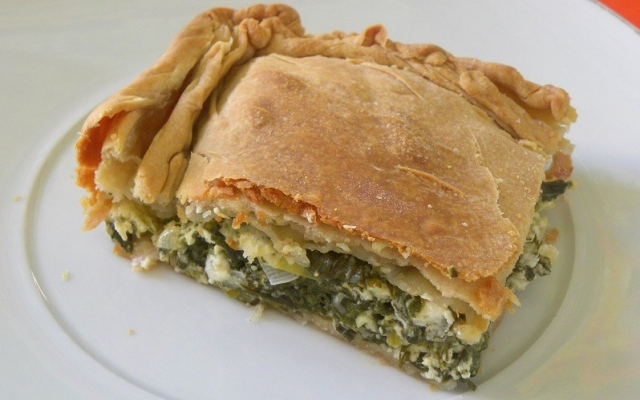

Spanakopita

Description
A greek pie with spinach, feta cheese and herbs
Ingredients
- 1 large onion, chopped
- 2 pounds spinach, rinsed and chopped
- ½ cup chopped fresh parsley
- 2 eggs, lightly beaten
- 1 cup crumbled feta cheese
- olive oil
- 8 sheets phyllo dough
Steps
- Preheat oven to 350 degrees F (175 degrees C). Lightly oil a 9x9 inch square baking pan.
- Heat 3 tablespoons olive oil in a large skillet over medium heat. Saute onion, green onions and garlic, until soft and lightly browned. Stir in spinach and parsley, and continue to saute until spinach is limp, about 2 minutes. Remove from heat and set aside to cool.
- In a medium bowl, mix together eggs, ricotta, and feta. Stir in spinach mixture. Lay 1 sheet of phyllo dough in prepared baking pan, and brush lightly with olive oil. Lay another sheet of phyllo dough on top, brush with olive oil, and repeat process with two more sheets of phyllo. The sheets will overlap the pan. Spread spinach and cheese mixture into pan and fold overhanging dough over filling. Brush with oil, then layer remaining 4 sheets of phyllo dough, brushing each with oil. Tuck overhanging dough into pan to seal filling.
- Bake in preheated oven for 30 to 40 minutes, until golden brown. Cut into squares and serve while hot.